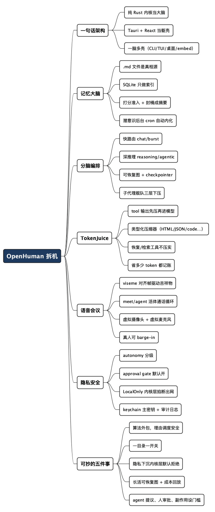

AI 助手拆机：OpenHuman 怎么做到"记得你、自己干、还不出网"
Posted on 三 05 8月 2026 in Tech
| Abstract | AI 助手 OpenHuman 拆机报告 |
|---|---|
| Authors | Walter Fan |
| Category | Tech |
| Status | v1.0 |
| Updated | 2026-08-05 |
| License | CC-BY-NC-ND 4.0 |
我这人不长记性，所以看到"一个记得一切的助手"这个卖点，比看到"又一个 AI 聊天框"更能让我手软。我把 tinyhumansai/openhuman clone 下来，想看看它那句宣传语到底有多少水分。
结论先说：它确实不是 AGI，但它是少数把"记忆、编排、隐私"这三件事都当成一等公民、而不是后补插件的 AI 助手。 而且架构上它做了一个很"老程序员"的决定——把算法的脏活全外包，自己只握着一个纯 Rust 内核，负责调度、安全和"对与错"。
README 里那句自我定位我很喜欢："OpenHuman is not AGI. But it is a meaningful architectural step closer." 翻译过来就是：我不装神仙，我先把该做的事做扎实。这态度，比满嘴跑火车的同行顺眼多了。
这篇文章按代码讲讲它现在的样子：为什么内核要单独剥出来、记忆树是怎么把脏数据压缩成能读的 Markdown、那个"分脑"的编排器是怎么指挥一群子代理的、TokenJuice 怎么省钱、代理怎么进会议室，以及隐私模式凭什么敢开到"一开关就彻底不出网"。
一句话架构：纯 Rust 内核当大脑，Tauri 桌面当躯壳
先给个全局视角，这套架构剥开其实只有两层。
内核（src/）是整个系统的唯一事实来源，用 Rust 写。 它不是一个微服务，也不是一个 sidecar 进程，而是以一个 CoreBuilder → CoreRuntime 的组合子，直接作为 tokio 任务跑在 Tauri 进程里（app/src-tauri/src/core_process.rs）。前端要调用它，走本机 127.0.0.1:7788 上的 axum JSON-RPC 服务，认证用一把只在内存里传、不写环境变量的 bearer token——连 /proc/<pid>/environ 都偷不到。
躯壳（app/）是 React + Tauri v2。 渲染层通过一个 coreRpcClient 桥接所有 RPC，剩下的是 Redux Toolkit 管状态、socket.io 推事件、Tailwind 画界面。
为什么非要把内核剥出来当一等公民？因为这样同一个大脑可以有多副躯壳：
| 外壳 | 怎么连 | 说明 |
|---|---|---|
openhuman-core CLI |
进程内直接调 controller | 命令行随便折腾 |
| TUI | 进程内 CoreBuilder 起内核，当纯客户端 |
终端里的用户界面 |
| 桌面 App | Tauri 壳内嵌内核 + HTTP RPC | 主产品 |
embed/ 宿主 |
CoreBuilder 组合子 |
把这个大脑嵌进别人的程序 |
src/main.rs 里几乎是空的——只做 Sentry 初始化、before_send 那次彻底的密钥/事件清洗、加载 dotenv、恢复 SIGPIPE，然后一句 run_core_from_args 就交给内核库。入口薄如纸，逻辑全在 src/openhuman/ 里。
而 src/openhuman/ 是三十几个按领域切的目录（memory/、agent/、mcp/、voice/、meet/、web3/、security/、flows/……），每个目录配一个 Cargo feature 门，编译时就能整套裁掉。"一个目录 = 一个功能开关"，这是把它从 124 个目录压到 31 个之后换来的清爽。
记忆不是"向量汤"，是一棵能读的 Markdown 树
记忆是 OpenHuman 的第一块招牌，也是我最想确认有没有水分的部分。结论：它在这个坑位上花的心思，明显比同类的"全塞进 embedding 向量"深。
它的模型是双层的：
上磁盘的
.md文件是唯一的"真相源"，SQLite 只管索引。向量？向量只是其中一张索引表，不是记忆本体。
具体说，memory/store/ 的逻辑是几件事配合：
.md文件：人类的正文，认为是不可变的，只有 YAML 头里的tags允许改；- SQLite：管 chunks、trees、entities、kv、vectors——也就是"哪段话属于哪棵树、得分多少、跟哪些实体相关"；
- 字节寻址：内容按
(content_path, content_sha256)定位，改一个字就是一个新块，绝不就地改原文。
每一类要记的东西（Source / Global / Topic 树）都同时实现 VectorEmbeddable 和 ObsidianRepresentable。 这句话值得划重点——意思是"凡是能进记忆的，既有向量表示、又能导出成 Obsidian 的 Markdown 让你打开编辑"。不是黑盒向量汤，是你真能打开看一眼的树。Karpathy 那个"把记忆存成纯文本文件"的执念，这里变成了产品级能力。
压缩靠的是准入打分（memory/tree/score/）：每个 chunk 先算一个 [0.0, 1.0] 的综合分（词数、唯一词、来源权重、交互标签、实体密度、LLM 重要性），落到一个"必丢 / 待定 / 必留"三分带里，再配合关系抽取和反向实体索引。等叶子桶攒够了，压缩器会把它们"封"成一条更高层级的摘要（summarise.rs），这就是封桶成摘要的级联——本质是让记忆不断向上抽象，老的细节沉到摘要里，新的细节留在桶里。
然后有个很 Boss 的设定："潜意识"（subconscious/）是一个后台 cron 循环，它不断 diff 你的世界、推进目标、写晨报——你以为你下班了，它还在消化今天发生的事。"潜意识"这名字起得真不客气，但它干的事就是这么个后台自动内化过程。
"会折腾的分脑"：反射快车 + 深推理核心
OpenHuman 宣传里最玄乎的是"分脑"：一个快速反射代理先分诊，一个深推理核心再派活。读完代码，我把它翻译成一个不玄乎的版本：
Agent 的每一次"思考"都跑在一张可恢复的图（tinyagents 的 CompiledGraph）上，由路由层决定这一轮走快通道还是深通道。
agent/tinyagents/routes.rs 里那个 ModelRouter 干脆利落：chat-v1 ⇄ burst-v1（轻快兄弟俩）对付日常，reasoning-v1 ⇄ agentic-v1（重推理兄弟俩）对付深活，再配上 coding-v1、vision-v1 各管一摊。中间件 RequiredCapabilitiesMiddleware 管"这模型得支持图才行"，FallbackObserverMiddleware 管"不行就换"，UsageCarryMiddleware 管用量记账。换模型不是拍脑袋，是路由表上一行配置。
编排的"分脑"在宿主会话（hosted/orchestration/）里看得更清楚：每个进来的会话 DM 变成一个 wake cycle，整个由一张 wake 图驱动。图的 frontend 节点是个"快速 LLM"，把宏观指令交给 reasoning 核心——这个核心再 spawn 出一群 worker 子代理去干活。快节点做路由，深节点负责任务，子代理当苦力。 三层往下压。
图是可 checkpointer 的（SqlRunLedgerCheckpointer / SqliteCheckpointer）：跑到一半停了？存盘，重启后从断点接着跑，不是重新来一遍。这对长任务几乎是刚需——谁也不想让一个跑了 20 分钟的编排因为程序一崩从头再来。
图的另一个被低估的好处是"能看"。 一个 Graph 天生就是一张可以画出来的 DAG，配上一份每次实际开销的回放，比"又一个黑盒循环"强太多。
SuperContext：模型还没读第一句，侦察兵先扫完你的家底
"冷启动"是 agent 界的通病：模型每次都不知道你最近翻过什么。OpenHuman 用 SuperContextMiddleware 解决——它押着每一轮对话的第一次模型调用，在其它任何 hook 之前，先派一个只读的 context_scout 子代理去搜你的记忆和文件。
等侦察兵回来，它把结果（一个 [context_bundle]）通过 prepend_text_to_last_user 折进用户消息里，模型一上来就已经带着"昨天你写了那篇草稿、今天邮件里有个 dead1ine"的上下文了。（顺手吐槽：我本来要写 deadline，这个词被 OpenHuman 习惯了。）
它还是 best-effort 的——侦察兵崩了也不挡主流程，顶多没拿到 bundle。这个"尽力而为、绝不添堵"的设计很老练：锦上添花的东西，不该成为主路径的定时炸弹。
TokenJuice：模型不付"见过除非"的账单
记忆造大了，最大的坑不是存储，是每次喂给模型的 token 账单。OpenHuman 的解法是把工具输出在被模型读到之前就地压缩，宣称同类信息最多省 80% 的 token。
这个引擎本身是外包的 tinyjuice crate，inference/tokenjuice/ 只是它的一层薄适配。它的实力在 ToolOutputMiddleware：工具返回一大堆 JSON/日志/网页，先按类型路由到对应的压缩器（compressors/ 里有 JSON、code、log、search、diff、HTML、ML 槽位那一堆），压完再进模型。树若是开着，代码压缩器还能用 tree-sitter 做真正的 AST 压缩——不是无脑截断，是懂语法的压。
它还配了个 tinyjuice_retrieve 工具，让模型自己开口"把那坨旧内容按需取回来/便宜地压一下"——又省又不忘，两头占。更有意思的是它的策略表：
- 提供一次恢复/检索的工具绝不压实（
is_recovery_tool、NEVER_COMPACT_TOOLS清单），因为丢了恢复入口的压缩就是自残； - 省下的每个 token 都记账（
savings.rs），能按模型单价换算成真金白银回填到 dashboard。
一个连"压缩省了多少钱"都要记账的项目，大概率是真的在认真算成本——这病，我和老后端都懂。
语音、会议、工作流：把"干活的 agent"武装到能进会议室
我原本以为"进会议室"是营销话术，读进去才发现它是真下了功夫的几块，值得拆开说。
语音（voice/）：STT 用本地 whisper.cpp 或托管后端，TTS 用本地 Piper 或托管 ElevenLabs，外加一个热键触发的听写服务。关键是语音合成返回的不只是音频，还有 Oculus-15 的 viseme 对齐帧——就是让吉祥物嘴巴对得上发音的那组关键帧，app/src/mascot/ 用 Rive 渲染出来。
会议（meet/ + meet/agent/）：核心里的 meet/ 只管一件事——单次校验：验证一个 meet.google.com 链接、裁掉显示名、发一个 request_id。所有平台侧的脏活（开 CEF webview、用 CDP 驱动 Meet 的加入页、挂一个虚拟摄像头、虚拟麦克风）都在 Tauri 壳里（app/src-tauri/src/meet_*）。而 meet/agent/ 是长命的活体通话循环：壳把 PCM 音频 + 抓取的 captions 流进核心，核心做 VAD 分段 STT，把每一句话路由进那个完整的编排器代理，合成 TTS 再流回虚拟麦克风。
这里有两个很值得抄的工程细节：
- 隐私门：只有 owner / allowlist 才能唤醒"会用工具"的那类 turn，防止会场上任何人一句话就把你的 agent 指挥得乱跑；
- barge-in：真人插话就打断 agent，不是等它把话说完。真人始终有优先权，这是"agent 是来帮忙的不是来祛魅的"的准确体现。
工作流（flows/）：agent 提议、你在画布上审、保存后才是 durable 的、触发器驱动的自动化。跑在 tinyflows 引擎上，门槛可以用 generic 的 approval 挡住副作用。"agent 自己提议、人审了才生效"——这跟我在 free4chat 里看到的"能默认关闭的 AI 才配叫隐私友好的 AI"是同一个心态。
隐私模式为什么敢"一开关就彻底不出网"
最后说安全——这块是 OpenHuman 最让我（一个被安全基线训过几轮的老后端）放心的部分，因为它是在 Rust 内核层强制执行，而不是靠前端提示或后台约定。
整个体系由 [autonomy] 配置块驱动出 SecurityPolicy，分三层：
- 自治分级：
readonly / supervised / full×workspace_only×trusted_roots。而且有个无条件 fail-closed 的铁律：workspace_dir（内部状态目录）是 agent 工具"永远不许写"的，不管你在哪个级别、trusted_roots 里写了啥（is_workspace_internal_path）。 - 命令头校验：
classify_command把命令分Read / Write / Network / Install / Destructive，不认识默认按Write处理，再叠gate_decision出Allow / Prompt / Block。系统目录和凭证目录无条件禁。 - 审批门（approval gate）：默认开。任何工具只要
external_effect()为真，就要过一道审批——allowed 清单短路，否则写一条pending_approvals，发个 UI 通知，然后用一个oneshot把这次调用挂起，直到approval_decide决定为止。10 分钟不批默认 Deny。
隐私模式（PrivacyMode::{Standard, LocalOnly}）是这套体系里最亮的一颗：LocalOnly 模式下，外部 provider / 集成 / 网络出口在内核的 factory / enforce 层就被直接掐死——inference/provider/factory.rs 直接返回"Local-only privacy mode is active"。不是设置里劝你别用外网，是代码层面压根不放行。
密钥栈也讲究：SecretStore 用加密落盘 + OS keychain 里的主密钥兜底，哈希比较用 constant_time_eq 防时序侧信道，还有 append-only 审计日志。
换个角度看，这套设计的核心心法就一句话：凡涉及"能不能/该不该"，一律下沉到最底一层、用默认拒绝来兜底；越往上，越只负责"漂亮"不负责"判断"。
我作为一个老后端，想抄走的五件事
把 OpenHuman 读完，我脑子里存的不是"又见了一个 AI 助手"，而是几个跨领域都能用的判断：
-
算法的脏活，能外包就别自己写。 记忆压缩、token 压缩、图引擎、芯片推理——全用
tinycortex/tinyjuice/tinyagents/tinyflows这些外包 crate 顶住，内核只留调度与安全。把精力花在组合与兜底，而不是重新发明向量。 -
"一个目录 = 一个功能开关"。 feature 门既能编译期砍，又能运行时
DomainSet配，还能自动生成 schema。规模大了以后，这种"可裁剪"比"全都要"好维护一个数量级。 -
隐私要下沉到内核层默认拒绝。 别在 UI 上劝，别在某个服务里偷偷放行。"一开关就彻底不出网"之所以可信，是因为它在 Rust 层就把出口堵死了。
-
长活要有可恢复的图 + 可回放的成本。 编排器跑在 checkpoint 图上，崩了从断点接；每轮实际开销能回放记账。这比"又一个黑盒循环"更像工程。
-
agent 提议、人审批、副作用设门槛。 从工作流画布到会议里的隐私门，"AI 自己跑、人点头才生效"——这是我能给任何自动化下的通用结论。
一句话：
做 AI 助手，胜利不在"显得多聪明"，而在把"记得住、靠得住、不乱来"这三件难事，用尽量少的自有代码一次做扎实。
如果你也好奇它这套"会折腾的剥洋葱式"架构，建议 clone 一份：git clone https://github.com/tinyhumansai/openhuman（记得 git submodule update --init --recursive，vendor 目录里的 tiny 家族才在）。重点读 src/openhuman/memory/store、src/openhuman/agent/tinyagents、src/openhuman/security 这三个目录，然后你会同意我说的：这是一次有诚意的"step closer"。*
唯一我没法替你验证的是线上跑的延迟、成本、以及它宣传的"开出即结 80% token"的实际收益——本地 clone 只管得了代码，够不到生产指标。你要是跑过，欢迎回来告诉我真实体验。
全文思维导图
@startmindmap
<style>
mindmapDiagram {
node {
BackgroundColor #F8F9FA
RoundCorner 10
Padding 10
FontSize 13
}
:depth(0) {
BackgroundColor #1E3A5F
FontColor white
FontSize 18
FontStyle bold
}
:depth(1) {
FontSize 15
FontStyle bold
}
:depth(2) {
FontSize 13
}
}
</style>
* OpenHuman 拆机
** 一句话架构
*** 纯 Rust 内核当大脑
*** Tauri + React 当躯壳
*** 一脑多壳（CLI/TUI/桌面/embed）
** 记忆大脑
*** .md 文件是真相源
*** SQLite 只做索引
*** 打分准入 + 封桶成摘要
*** 潜意识后台 cron 自动内化
** 分脑编排
*** 快路由 chat/burst
*** 深推理 reasoning/agentic
*** 可恢复图 + checkpointer
*** 子代理舰队三层下压
** TokenJuice
*** tool 输出先压再进模型
*** 类型化压缩器（HTML/JSON/code…）
*** 恢复/检索工具不压实
*** 省多少 token 都记账
** 语音会议
*** viseme 对齐帧驱动吉祥物
*** meet/agent 活体通话循环
*** 虚拟摄像头 + 虚拟麦克风
*** 真人可 barge-in
** 隐私安全
*** autonomy 分级
*** approval gate 默认开
*** LocalOnly 内核层掐断出网
*** keychain 主密钥 + 审计日志
** 可抄的五件事
*** 算法外包，理由调度安全
*** 一目录一开关
*** 隐私下沉内核层默认拒绝
*** 长活可恢复图 + 成本回放
*** agent 提议、人审批、副作用设门槛
@endmindmap

本作品采用知识共享署名-非商业性使用-禁止演绎 4.0 国际许可协议进行许可。 欢迎在我的个人网站 https://www.fanyamin.com 访问原文并评论。